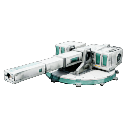

Wiki / Stat Reference / Weapon Modules / Surgical Solution Driver

Weapon Modules
Surgical Solution Driver
The Union's final answer to armor: a rail that treats the thickest plating as a rounding error. Efficiency is mercy; this is neither slow nor merciful.
- Weapon Type
- Railgun
- Damage Type
- Kinetic
- Fire Pattern
- Single Shot
- Module Tier
- Tier 5 Elite
- Faction
- Technocrat Union
- Scope
- Outpost
Base DPS
370
Base Damage Per Shot
370
Base Max Range
1,500
Base Firing Speed
1
Base Mass
10
Offense
- Base DPS
- 370
- Base Damage Per Shot
- 370
- Base Min Range
- 220
- Base Max Range
- 1,500
- Base Firing Speed
- 1
- Projectile Speed
- 14,000
- Shots Per Salvo
- 1
- Salvo Interval
- 0
- Base Shield Bypass
- 0
- Base Armor Bypass
- 0.5
- Base Shield Damage
- 0.9
- Base Armor Damage
- 1.05
- Base Spread
- 0.2
- Base Tracking
- 1.2
- Splash Radius
- 0
- Chain Count
- 0
- Chain Damage Falloff
- 0
- Base Stasis Chance
- 0
- Base Stasis Duration
- 0
- Projectile
- —
Mobility & Sensors
- Base Mass
- 10
Repair
- Base Repair Time
- 7m 30s
- Repair Cost Minerals
- 950
- Repair Cost Helium
- 150
- Repair Cost Antimatter
- 40
Cost & Build Time
- Build Time
- 1h 30m
- Build Cost Minerals
- 9,500
- Build Cost Helium
- 1,475
- Build Cost Antimatter
- 375
- Lab Time Total
- 45m
Requirements
- Required Lab Level
- 5
- Required Player Level
- 15
- Limited Edition
- No
- Requires Research
- Yes
- Slots Required
- 3
- Required Research ID
- Surgical Solution Driver
Mark Levels
| Mark Level | DPS Multiplier | Range Multiplier | Speed Multiplier | Mass Multiplier | Unlock XP Cost | Unlock Coin Cost |
|---|---|---|---|---|---|---|
| 1 | 1 | 1 | 1 | 1 | 0 | 0 |
| 2 | 1.15 | 1.05 | 1.05 | 1.05 | 7,000 | 6,000 |
| 3 | 1.32 | 1.1 | 1.1 | 1.1 | 15,000 | 13,000 |
| 4 | 1.52 | 1.15 | 1.15 | 1.15 | 27,000 | 24,000 |
| 5 | 1.75 | 1.2 | 1.2 | 1.2 | 48,000 | 42,000 |